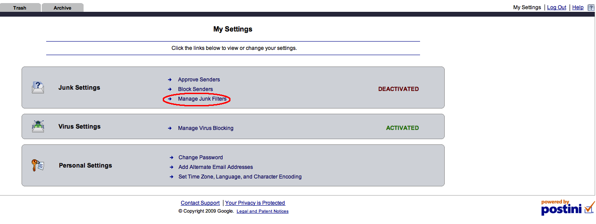
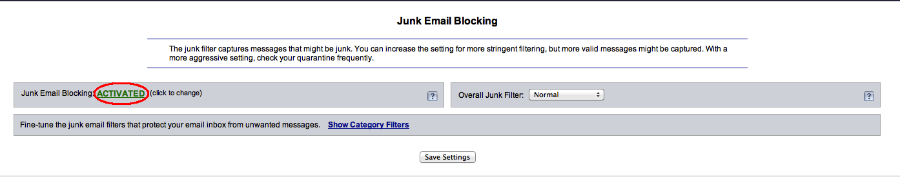
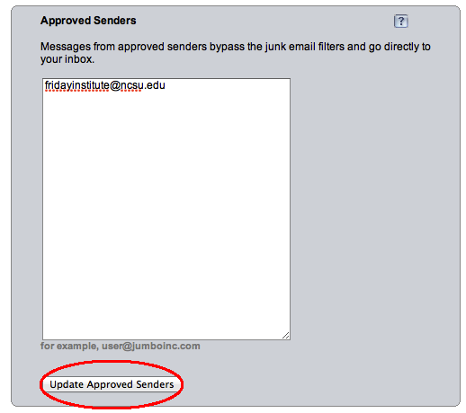
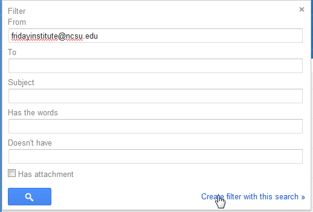
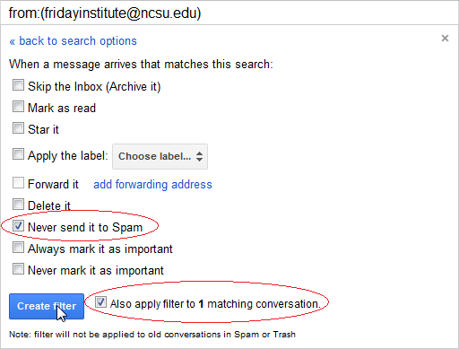

Home
Friday Institute Support FAQ
Disable the use of Postini
1) Log into your postini account at junkmail.ncsu.edu

2) Once there, press the My Settings button in the right corner.

3) Next press the Manage Junk Filters link in the Junk Settings.
4) A new page will open. On the left side of the page will be a Junk Email Blocking area.

5) Press the ACTIVATED button that is in green. It will then change to red and sa DEACTIVATED. Then press Save Settings.
6) You are now free to logout and Postini will be disabled.
Home
Friday Institute Support FAQ
Set up a filter to catch emails from fridayinstitute@ncsu.edu
1) Log into your postini account at junkmail.ncsu.edu
2) Once there, press the My Settings button in the right corner.

3) Next press the Approve Senders link in the Junk Settings.
4) A new page will open. On the left side of the page will be an Approved Senders area.
5) In the Approved senders area, type fridayinstitute@ncsu.edu and press Update Approved Senders.

6) You are now free to logout and all futher emails sent to fridayinstitute@ncsu.edu will go directly to your inbox.
Home
Friday Institute Support FAQ
Set up a filter to catch emails from fridayinstitute@ncsu.edu
1) Log into your Gmail account at gmail.ncsu.edu
2) At the top right corner press the button that looks like a gear.

3) From the drop down menu, press the Settings button.
4) Once on the Settings Page, press the Filters tab.

5) At the bottom of the filters page, press the "Create Filter" button.

6) A small window will open up. In the from line, type fridayinstitute@ncsu.edu. Then press the "Create filter with this search" button.

7) A series of check bokes will appear. Check the "Never sent it to Spam" button as well as the "Also apply filter to # matching conversation".
8) Press the "Create filter" button and the filter will be created.

Home
Friday Institute Support FAQ
Connecting to data.fi.ncsu.edu from a Mac
1. Click on Finder from the dock then on the Top Menu Bar Click GO
2. Scroll down to the bottom to select Connect to Server
3. Enter the smb://data.fi.ncsu.edu/ as the URL and click "Connect"
4. Select "Registered User"
5. Type your UNITY user name and data.fi.ncsu.edu password. NOTE: this is NOT your UNITY Password
6. Click Connect
7. Select the Project you want
Home
Friday Institute Support FAQ
Connecting to the NCSU VPN on a Mac
1. Goto your Applications folder
2. Go into the "Cisco" folder
3. Double click the Cisco AnyConnect VPN Client Application
4. Where it says "Connect To:" use "vpn.ncsu.edu"
5. Enter your UNITY username and password and click "Connect"
6. If you receive no errors then you are connected
The VPN is Connected
I Need Help